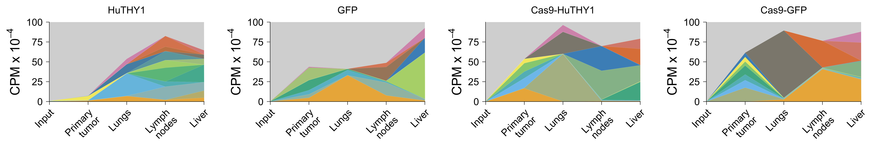
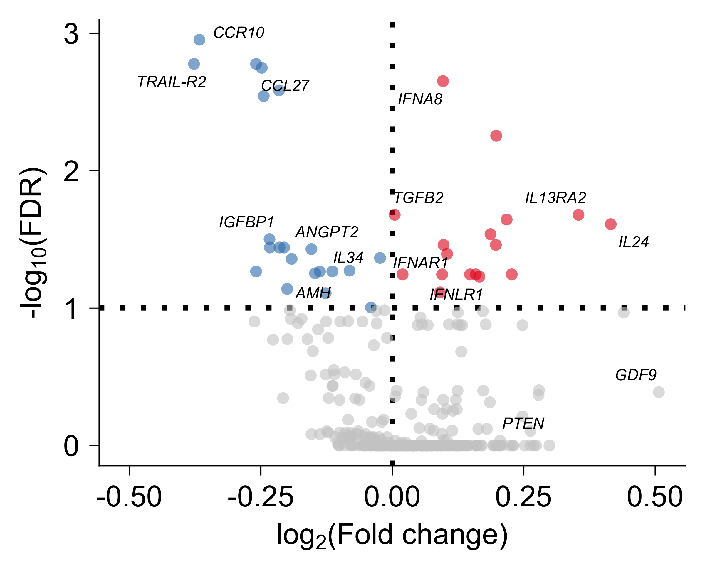
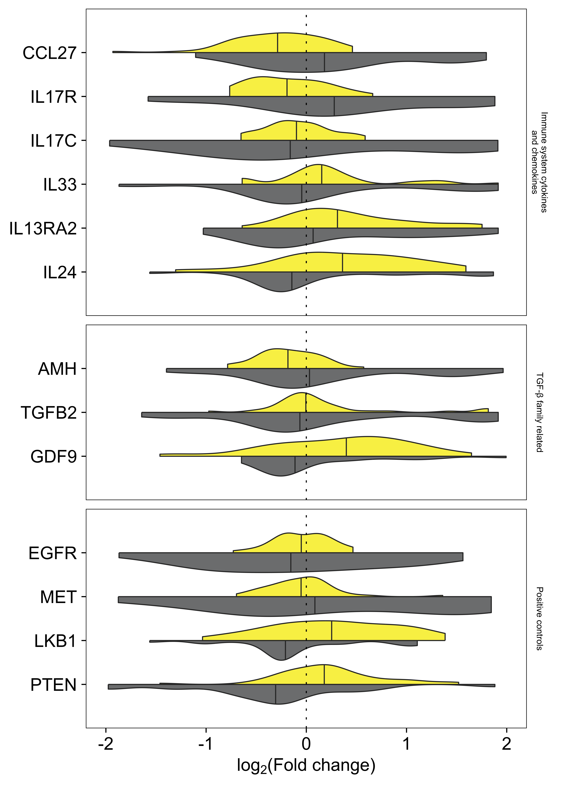
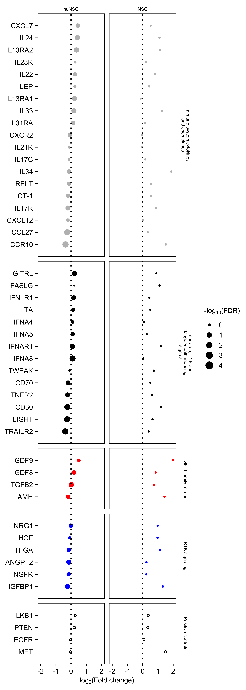

Clonal dynamics in humanized NSG mice (huNSG)
Human libray (n = 2180)
Francesc Castro-Giner
July 01, 2025
Last updated: 2025-07-01
Checks: 7 0
Knit directory: saini-stealTHY/
This reproducible R Markdown analysis was created with workflowr (version 1.7.1). The Checks tab describes the reproducibility checks that were applied when the results were created. The Past versions tab lists the development history.
Great! Since the R Markdown file has been committed to the Git repository, you know the exact version of the code that produced these results.
Great job! The global environment was empty. Objects defined in the global environment can affect the analysis in your R Markdown file in unknown ways. For reproduciblity it’s best to always run the code in an empty environment.
The command set.seed(20240517) was run prior to running
the code in the R Markdown file. Setting a seed ensures that any results
that rely on randomness, e.g. subsampling or permutations, are
reproducible.
Great job! Recording the operating system, R version, and package versions is critical for reproducibility.
Nice! There were no cached chunks for this analysis, so you can be confident that you successfully produced the results during this run.
Great job! Using relative paths to the files within your workflowr project makes it easier to run your code on other machines.
Great! You are using Git for version control. Tracking code development and connecting the code version to the results is critical for reproducibility.
The results in this page were generated with repository version 92e6eea. See the Past versions tab to see a history of the changes made to the R Markdown and HTML files.
Note that you need to be careful to ensure that all relevant files for
the analysis have been committed to Git prior to generating the results
(you can use wflow_publish or
wflow_git_commit). workflowr only checks the R Markdown
file, but you know if there are other scripts or data files that it
depends on. Below is the status of the Git repository when the results
were generated:
Ignored files:
Ignored: .DS_Store
Ignored: .Rhistory
Ignored: .Rproj.user/
Ignored: analysis/.DS_Store
Ignored: code/.DS_Store
Ignored: code/raw_data_processing/rnaseq/p27851_o32062/pipelines/
Ignored: configuration/.DS_Store
Ignored: data/.DS_Store
Ignored: data/crispr/
Ignored: data/resources/
Ignored: data/rnaseq/
Ignored: output/.DS_Store
Ignored: output/clinical/
Ignored: output/crispr/
Ignored: output/rnaseq/
Untracked files:
Untracked: analysis/crispr-mm_2215_sgRNA-clonality_r1.Rmd
Untracked: analysis/templates/
Untracked: code/R-functions/subchunkify.R
Unstaged changes:
Modified: .gitignore
Modified: analysis/crispr-hsapiens_2180_sgRNA.Rmd
Modified: analysis/crispr-mm_2215_sgRNA-r2oC.Rmd
Modified: code/R-functions/gse_report.r
Modified: configuration/rmarkdown/ggplot_theme.R
Modified: update_workflowr.R
Note that any generated files, e.g. HTML, png, CSS, etc., are not included in this status report because it is ok for generated content to have uncommitted changes.
These are the previous versions of the repository in which changes were
made to the R Markdown
(analysis/crispr-hsapiens_2180_sgRNA_r1.Rmd) and HTML
(docs/crispr-hsapiens_2180_sgRNA_r1.html) files. If you’ve
configured a remote Git repository (see ?wflow_git_remote),
click on the hyperlinks in the table below to view the files as they
were in that past version.
| File | Version | Author | Date | Message |
|---|---|---|---|---|
| Rmd | 92e6eea | Francesc Castro-Giner | 2025-07-01 | update crispr analysis |
1 Load libraries, additional functions and data
Setup environment
knitr::opts_chunk$set(results='asis', echo=TRUE, message=FALSE, warning=FALSE, error=FALSE, fig.align = 'center', fig.width = 3.5, fig.asp = 0.618, dpi = 600, dev = c("png", "pdf"), fig.showtext = FALSE, engine.opts = list(bash = "-l"))
options(stringsAsFactors = FALSE)
use_seed <- 1100101
set.seed(use_seed)
# dir.create(params$output_dir, recursive = TRUE, showWarnings = FALSE)Load packages
library(tidyverse)
library(knitr)
library(foreach)
library(magrittr)
library(DT)
library(kableExtra)
library(diptest)
library(SummarizedExperiment)
library(ggridges)
library(ggh4x)
library(patchwork)
library(colorblindr)
library(ggbeeswarm)
library(ggpubr)
library(cowplot)
library(grid)
library(ggrepel)
library(MAGeCKFlute)Load ggplot theme
source("./configuration/rmarkdown/ggplot_theme.R")Load ggplot theme
source("./configuration/rmarkdown/color_palettes.R")Load custom functions
source('./code/R-functions/geom_split_violin.R')Load Summarized Experiment object
se <- readRDS(file.path(params$data_dir, 'se.rds'))Filter samples used for this analysis
use_cols <- colData(se) %>%
data.frame %>%
filter(effect_type_short == 'noKO') %>%
filter(vector_short != "Thy1_EF1alpha_dCas9") %>%
rownames
se <- se[,use_cols]Data wrangling
chunk_colData <- colData(se) %>% data.frame %>%
mutate(
immunogen_mmmodel = paste(immunogen, mm_model_type, sep = '_'),
immunogen_burden = ifelse(
immunogen == 'no_immunogen' & mm_model_type == 'Imm.competent',
'HuTHY1', NA),
immunogen_burden = ifelse(
immunogen == 'dCas9-GFP' & mm_model_type == 'Imm.deficient',
'GFP', immunogen_burden),
immunogen_burden = ifelse(
immunogen == 'dCas9-THY' & mm_model_type == 'Imm.competent',
'Cas9-HuTHY1', immunogen_burden),
immunogen_burden = ifelse(
immunogen == 'dCas9-GFP' & mm_model_type == 'Imm.competent',
'Cas9-GFP', immunogen_burden),
immunogen_burden = factor(
immunogen_burden,
levels = c('HuTHY1', 'GFP', 'Cas9-HuTHY1', 'Cas9-GFP')),
sample_type = case_match(
sample_type,
"In vitro" ~ 'Input',
"whole_tumor" ~ 'Primary tumor',
"whole_lung" ~ 'Lungs',
"met_lymph" ~ 'Lymph nodes',
"met_liver" ~ 'Liver'
),
sample_type = factor(
sample_type,
levels = c('Input', 'Primary tumor', 'Lungs', 'Liver', 'Lymph nodes')
),
mouse_model_short = ifelse(mm_model_type == 'Imm.competent',
'huNSG', NA),
mouse_model_short = ifelse(mm_model_type == 'Imm.deficient',
'NSG', mouse_model_short),
mouse_model_short = ifelse(mm_model_type == 'In_vitro',
'In vitro', mouse_model_short)
#
# vector_short = ifelse(vector_short == 'Puro_EF1alpha_dCas9',
# 'dCas9+Puro', vector_short),
# vector_short = factor(vector_short, levels = c('Thy1', 'Puro', 'dCas9+Puro')),
# mouse_model_short = case_match(mouse_model_global,
# 'immunodeficient' ~ 'NSG',
# 'immunocompetent' ~ 'Syngeneic'
# ),
# mouse_model_short = factor(mouse_model_short, levels = c('NSG', 'Syngeneic')),
# vector_mhost = paste0(vector_short, ', ', mouse_model_short),
# model_vector_mhost = paste0(donor,', ', vector_short, ', ', mouse_model_short),
#
# sample_type = case_match(sample_type,
# 'whole_tumor' ~ 'Primary tumor',
# 'whole_lung' ~ 'Lung mets'),
# sample_type = factor(sample_type, levels = c('Primary tumor', 'Lung mets'))
)
colData(se) <- chunk_colData %>% DataFrame2 Configure analysis
2.1 MAGeCK analysis
2.1.1 List of comparisons
List of comparisons for differential abundance using MAGeCK
x <- colData(se) %>% data.frame
mageck_comp_list <- list(
`StealTHY huNSG` = list(
`Primary tumor` = x %>% filter(immunogen == 'StealTHY' & mm_model_type == 'Imm.competent' & sample_type == 'Primary tumor') %>%
arrange(replicate) %>%
pull(sample_alias),
`Lung mets` = x %>% filter(immunogen == 'StealTHY' & mm_model_type == 'Imm.competent' & sample_type == 'Lungs') %>%
filter(replicate %in% 1:7) %>%
arrange(replicate) %>%
pull(sample_alias),
paired = TRUE
),
`StealTHY NSG` = list(
Tumor = x %>% filter(immunogen == 'StealTHY' & mm_model_type == 'Imm.deficient' & sample_type == 'Primary tumor') %>%
arrange(replicate) %>%
pull(sample_alias),
Lung = x %>% filter(immunogen == 'StealTHY' & mm_model_type == 'Imm.deficient' & sample_type == 'Lungs') %>%
arrange(replicate) %>%
pull(sample_alias),
paired = TRUE
)
)
mageck_comp_list_names <- names(mageck_comp_list)
names(mageck_comp_list_names) <- names(mageck_comp_list) %>% gsub(" ", "_",.) %>% tolower2.1.2 Run MAGeCK
Generate MAGeCK test scripts. To generate the script files change
eval = FALSE to eval = TRUE in the chunk
options.
The scripts must be run in the terminal, inside the path ./output/crispr/hsa_2180_sgRNA/mageck_rra. The script will activate the mageck environment and run the test for each comparison. The results will be saved in the same directory.
out_dir <- file.path(params$output_dir, params$mageck_dir)
dir.create(out_dir, recursive = TRUE, showWarnings = FALSE)
# Generate count matrix
count_mat <- assay(se, 'counts') %>% data.frame(check.names = FALSE) %>%
rownames_to_column('sgRNA') %>%
mutate(Gene = rowData(se)$Gene) %>%
dplyr::select(sgRNA, Gene, everything())
write_tsv(count_mat, file = file.path(out_dir, 'counts.txt'))
# Generate list of control sgRNA IDs
non_target_list <- rownames(se) %>% grep('Non_Target', ., value = T) %>% data.frame
write_tsv(non_target_list, file = file.path(out_dir, 'control_sgrna.txt'), col_names = F)
# Generate mageck commands
res_cmd <- data.frame('source activate mageckenv')
i=names(mageck_comp_list)[1]
res_cmd <- foreach(i=names(mageck_comp_list), .combine = rbind) %do% {
if(mageck_comp_list[[i]]$paired) {
paste('mageck test -k counts.txt --control-sgrna control_sgrna.txt --norm-method control --paired -t', paste(mageck_comp_list[[i]][[2]], collapse = ','),'-c', paste(mageck_comp_list[[i]][[1]], collapse = ','), '-n', tolower(gsub(" ", "_", i)), '\n')} else {
paste('mageck test -k counts.txt --control-sgrna control_sgrna.txt --norm-method control -t', paste(mageck_comp_list[[i]][[2]], collapse = ','),'-c', paste(mageck_comp_list[[i]][[1]], collapse = ','), '-n', tolower(gsub(" ", "_", i)), '\n')
}
} %>% data.frame()
res_cmd <- rbind('conda activate mageckenv', res_cmd, 'conda deactivate')
write_tsv(res_cmd, file.path(out_dir, 'run_mageck_test.sh'), col_names = FALSE)2.1.3 Load MAGeCK results
gene_summ_files <- list.files(path = file.path(params$output_dir, params$mageck_dir), pattern = 'gene_summary.txt', full.names = TRUE)
analysis_prefix <- basename(gene_summ_files) %>% gsub(".gene_summary.txt", "", .)
gene_summ <- foreach(i = gene_summ_files) %do% read.delim(i, check.names = FALSE)
names(gene_summ) <- analysis_prefix
sgrna_summ_files <- list.files(path = file.path(params$output_dir, params$mageck_dir), pattern = 'sgrna_summary.txt', full.names = TRUE)
analysis_prefix <- basename(sgrna_summ_files) %>% gsub(".sgrna_summary.txt", "", .)
sgrna_summ <- foreach(i = sgrna_summ_files) %do% read.delim(i, check.names = FALSE)
names(sgrna_summ) <- analysis_prefix3 Muller plots
Define muller plots groups
x <- colData(se) %>% data.frame()
muller_groups_selected <- list(
`HuTHY1` = x %>%
filter(immunogen_burden == 'HuTHY1' & replicate == '4') %>%
pull(sample_alias),
`GFP` = x %>%
filter(immunogen_burden == 'GFP' & replicate == '4') %>%
pull(sample_alias),
`Cas9-HuTHY1` = x %>%
filter(immunogen_burden == 'Cas9-HuTHY1' & replicate == '1') %>%
pull(sample_alias),
`Cas9-GFP` = x %>%
filter(immunogen_burden == 'Cas9-GFP' & replicate == '1') %>%
pull(sample_alias)
)
# Add loading control
loading_control <- 'Replacement_Sample'
muller_groups_selected <- map(muller_groups_selected, function(x) c(loading_control, x))Generate muller plots
cpm_threshold <- 50000
use_df <- assay(se, 'cpm') %>% data.frame(check.names = FALSE) %>%
rownames_to_column('guide') %>%
mutate(
gene = rowData(se)$Gene,
gene = ifelse(grepl('Non_Target', gene), 'Non_Target', gene)
) %>%
pivot_longer(-c(guide, gene), names_to = 'sample_alias', values_to = 'cpm') %>%
left_join(colData(se) %>% data.frame %>% dplyr::select(sample_alias, sample_type)) %>%
mutate(
sample_type = recode_factor(
sample_type,
`Primary tumor` = 'Primary\ntumor',
`Lymph nodes` = 'Lymph\nnodes'
),
sample_type = factor(
as.character(sample_type),
levels = c('Input', 'Primary\ntumor', 'Lungs', 'Lymph\nnodes', 'Liver')
)
)
i <- names(muller_groups_selected)[1]
muller_plots <- foreach(i = names(muller_groups_selected)) %do% {
j <- muller_groups_selected[[i]]
x <- use_df %>%
filter(sample_alias %in% j) %>%
mutate(
sample_alias = factor(sample_alias, j)
)
x_guides_keep <- x %>% group_by(sample_alias, sample_type, guide) %>% summarise(cpm = max(cpm)) %>% filter(cpm > cpm_threshold) %>% pull(guide)
low_abundant_tag <- paste('<', cpm_threshold, 'cpm')
x %<>%
mutate(
guide = ifelse(guide %in% x_guides_keep, guide, low_abundant_tag)
) %>%
group_by(sample_alias, sample_type, guide) %>%
summarise(cpm = sum(cpm)) %>%
ungroup() %>%
mutate(
guide = fct_reorder(guide, cpm),
guide = relevel(guide, ref = low_abundant_tag)
)
use_cols <- c(
'grey80',
colorRampPalette(rev(palette_OkabeIto[1:7]))(nlevels(x$guide) - 1) %>% set_names(levels(x$guide)[-1])
)
names(use_cols)[1] <- low_abundant_tag
x %>%
ggplot( aes(x = sample_type, y = cpm/10000, group = guide, fill = guide)) +
geom_area(colour = alpha("white", 0.1), linewidth = 0.08, alpha = 0.8) +
scale_fill_manual(values = use_cols, guide = guide_legend(ncol = 3)) +
labs(
x = '',
y = expression("CPM x 10"^-4),
fill = '',
title = i
) +
theme(
# panel.background = element_rect(fill = "grey90"),
# plot.margin = margin(0.5, 1.5, 0.5, 0, "cm"),
plot.margin = margin(0, 0.5, 0, 0, "cm"),
axis.text = element_text(size=6),
plot.title = element_text(size=6, hjust = 0.5)
) +
guides(fill = 'none') +
scale_x_discrete(expand = c(0, 0), guide = guide_axis(angle = 45)) +
scale_y_continuous(expand = c(0, 0))
}
names(muller_plots) <- names(muller_groups_selected)3.1 Figure 5H: Muller plots for huNSGs
Muller plots showing the relative frequency (CPM) of unique sgRNAs in the indicated samples. Guides with CPM ≥ 5^{4} are colored. Individual guides with CPM < 5^{4} are grouped in a grey area.
wrap_plots(muller_plots, nrow = 1)
4 sgRNA distribution by condition Primary tumor
use_sample_type <- 'Primary tumor'
use_colData <- colData(se) %>% data.frame %>%
filter(sample_type == use_sample_type)4.1 Figure 6B: sgRNA distribution of in mice transplanted with cells subjected to StealTHY KO
sample_ord <- rev(c(
'C1Position_HumanPlate2',
'C2Position_HumanPlate2',
'E2Position_HumanPlate2',
'E1Position_HumanPlate2',
'G1Position_HumanPlate2',
'C4Position_HumanPlate2',
'C3Position_HumanPlate2',
'G3Position_HumanPlate2',
'E3Position_HumanPlate2',
'A4Position_HumanPlate2'
))
use_assay <- assay(se[,sample_ord], 'cpm') %>%
as.data.frame(check.names = F) %>%
rownames_to_column('guide') %>%
pivot_longer(-guide, names_to = 'sample_alias', values_to = 'cpm') %>%
left_join(use_colData) %>%
mutate(
sample_alias = factor(sample_alias, levels = sample_ord)
)
use_assay %>%
ggplot(aes(x=cpm + 1, y = sample_alias,
fill = mouse_model_short,
height = after_stat(density))) +
geom_density_ridges(color = 'black',
size = one_pt/4,
alpha = 0.8,
scale = 4,
rel_min_height = 0.001 # set the `rel_min_height` argument to remove tails,
) +
scale_fill_manual(values = palette_hu_stealthy_ko) +
scale_x_log10(expand = expansion(mult = c(0, 0))) +
scale_y_discrete(expand = c(0.01, 0)) +
labs(y = '') +
guides(fill = 'none', color = 'none') +
theme_ridges(font_size = 6, grid = F) +
theme(
strip.background = element_blank(),
axis.line.x = element_line(linewidth = one_pt/4, color = 'black'),
axis.ticks.x = element_line(linewidth = one_pt/4, color = 'black'),
axis.text.y = element_blank()
)
5 Differential abundance analysis
gene_info <- readxl::read_xlsx('./data/resources/selected_gene_list/gene_list_for_figure_7d.xlsx')
use_colors <- c(
`Immune system cytokines and chemokines` = 'grey',
`Immune system cytokines\nand chemokines` = 'grey',
`Interferone, TNF and danger/death-inducing signals` = 'black',
`Interferon, TNF\nand danger/death-inducing\nsignals` = 'black',
`Interferon, TNF and\ndanger/death-inducing\nsignals` = 'black',
`TGF-β family related` = 'red',
`RTK signaling` = 'blue',
`Positive controls` = 'black'
)
use_fill <- c(
`Immune system cytokines and chemokines` = 'grey',
`Immune system cytokines\nand chemokines` = 'grey',
`Interferone, TNF and danger/death-inducing signals` = 'black',
`Interferon, TNF\nand danger/death-inducing\nsignals` = 'black',
`Interferon, TNF and\ndanger/death-inducing\nsignals` = 'black',
`TGF-β family related` = 'red',
`RTK signaling` = 'blue',
`Positive controls` = 'white'
)
use_shape <- c(
`Immune system cytokines and chemokines` = 16,
`Immune system cytokines\nand chemokines` = 16,
`Interferone, TNF and danger/death-inducing signals` = 16,
`Interferon, TNF\nand danger/death-inducing\nsignals` = 16,
`Interferon, TNF and\ndanger/death-inducing\nsignals` = 16,
`TGF-β family related` = 16,
`RTK signaling` = 16,
`Positive controls` = 1
)
# get gene order based on LFC in StealTHY_IC
i <- 'stealthy_hunsg'
gene_levels <- gene_summ[[i]] %>%
ReadRRA(score = 'lfc') %>%
dplyr::rename(LFC = Score) %>%
left_join(gene_info, by = c('id' = 'id')) %>%
filter(!is.na(gene_set)) %>%
mutate(gene_name = fct_reorder(gene_name, LFC)) %>%
pull(gene_name) %>%
levels5.1 Figure 6C: Volcano plots showing genes Lungs over Primary Tumor in StealTHY KO
Colored points with FDR ≤ 0.10
lfc_colors <- c(none = "gray80", up = "#e41a1c", down = "#377eb8")
i <- 'stealthy_hunsg'
x <- gene_summ[[i]] %>%
ReadRRA(score = 'lfc') %>%
dplyr::rename(LFC = Score) %>%
mutate(
direction = ifelse(FDR <= 0.10 & LFC > 0, 'up', 'none'),
direction = ifelse(FDR <= 0.10 & LFC < 0, 'down', direction),
is.significant = FDR <= 0.10,
id = ifelse(id == 'TNFRSF10B', 'TRAIL-R2', id)
)
use_xlim <- xlim(-max(abs(x$LFC), na.rm = TRUE), max(abs(x$LFC), na.rm = TRUE))
genes_to_highlight <- c('CCR10', 'TRAIL-R2', 'CCL27', 'IGFBP1', 'ANGPT2', 'AMH', 'IL34',
'IFNA8', 'TGFB2', 'IL13RA2', 'IFNAR1', 'IL24', 'IFNLR1', 'PTEN', 'GDF9')
data_text <- x %>%
filter(id %in% genes_to_highlight)
ggplot(x, aes(LFC, -log10(FDR), color = direction)) +
geom_hline(yintercept = -log10(0.10), linetype = 3) +
geom_vline(xintercept = 0, linetype = 3) +
geom_point(shape = 16, alpha = 0.6, size = 0.8) +
scale_color_manual(values = lfc_colors) +
geom_text_repel(
data = data_text,
aes(label = id),
color = 'black',
size = 0.4*geom_text_size,
min.segment.length = 0,
segment.size = 0.2,
box.padding = 0.1,
max.overlaps = Inf,
fontface="italic"
) +
use_xlim +
labs(
x = expression(paste("lo", g[2],"(Fold change)")),
y = expression(paste("-lo", g[10],"(FDR)"))
) +
guides(color = 'none', size = 'none') +
theme(
axis.text = element_text(size=6),
axis.title = element_text(size = 6)
)
5.2 Figure 6D: Distribution of the fold-change of Lungs over Primary Tumor in huNSG and NSG host
i <- names(gene_summ)[1]
curate_gene_sets <- c(
'Immune system cytokines and chemokines',
'TGF-β family related',
'Positive controls'
)
levels_gene_sets <- c(
'Immune system cytokines\nand chemokines',
'TGF-β family related',
'Positive controls'
)
curated_gene_list <- c('IL24', 'IL13RA2', 'IL33', 'IL17C', 'IL17R', 'CCL27',
'GDF9', 'TGFB2', 'AMH',
'PTEN', 'LKB1', 'MET', 'EGFR')
curated_gene_info <- gene_info %>%
filter(gene_set %in% curate_gene_sets) %>%
filter(gene_name %in% curated_gene_list)
plot_data <- foreach(i=names(gene_summ), .combine = rbind) %do% {
xsg <- sgrna_summ[[i]] %>%
select(Gene, sgrna, LFC, FDR) %>%
dplyr::rename(sgLFC = LFC, sgFDR = FDR)
gene_summ[[i]] %>%
ReadRRA(score = 'lfc') %>%
dplyr::rename(LFC = Score) %>%
mutate(
direction = ifelse(FDR <= 0.10 & LFC > 0, 'up', 'none'),
direction = ifelse(FDR <= 0.10 & LFC < 0, 'down', direction),
is.significant = FDR <= 0.10,
comparison = i
) %>%
left_join(curated_gene_info, by = c('id' = 'id')) %>%
filter(!is.na(gene_set)) %>%
mutate(
gene_name = factor(gene_name, levels = curated_gene_list),
gene_set = ifelse(
gene_set == 'Immune system cytokines and chemokines',
'Immune system cytokines\nand chemokines',
gene_set
),
gene_set = factor(gene_set, levels_gene_sets)
) %>%
left_join(xsg, by = c('id' = 'Gene'), relationship = "many-to-many")
}
plot_data %<>%
mutate(
mouse_model_short = case_match(comparison,
'stealthy_hunsg' ~ 'huNSG',
'stealthy_nsg' ~ 'NSG'),
mouse_model_short = factor(mouse_model_short,
levels = c('NSG', 'huNSG'))
)
xlim <- c(-ceiling(max(abs(plot_data$LFC), na.rm = TRUE)),
ceiling(max(abs(plot_data$LFC), na.rm = TRUE)))
plot_data %>%
ggplot(aes(y = sgLFC, x = gene_name, fill = mouse_model_short)) +
geom_split_violin(
aes(y = sgLFC, x = gene_name, fill = mouse_model_short),
alpha = 0.8,
draw_quantiles = 0.5,
linewidth = one_pt/2,
scale = 'width'
) +
coord_flip() +
geom_hline(yintercept = 0, linetype = 3,linewidth = one_pt/2) +
scale_x_discrete(expand = expansion(add = c(1, 1))) +
scale_fill_manual(values = palette_hu_stealthy_ko) +
ylim(xlim) +
facet_grid(rows = vars(gene_set), scales = 'free_y', space = 'free_y')+
theme_facet +
theme(
# axis.line = element_line(linewidth = one_pt/2, color = 'black'),
axis.ticks = element_line(linewidth = one_pt/2, color = 'black'),
panel.border = element_rect(linewidth = one_pt/2, color = 'black'),
axis.text = element_text(size=8),
axis.title = element_text(size = 8),
legend.title = element_text(size=8),
legend.text = element_text(size=8),
strip.text = element_text(size = 4)
) +
labs(
y = expression(paste("lo", g[2],"(Fold change)")),
x = NULL
)+
guides(color = 'none', fill = 'none', size = 'none')
5.3 Supplementary Figure 6D: Fold-change of Lungs over Primary Tumor in huNSG and NSG host
i <- names(gene_summ)[1]
plot_data <- foreach(i=names(gene_summ), .combine = rbind) %do% {
gene_summ[[i]] %>%
ReadRRA(score = 'lfc') %>%
dplyr::rename(LFC = Score) %>%
mutate(
direction = ifelse(FDR <= 0.10 & LFC > 0, 'up', 'none'),
direction = ifelse(FDR <= 0.10 & LFC < 0, 'down', direction),
is.significant = FDR <= 0.10,
comparison = i
) %>%
left_join(gene_info, by = c('id' = 'id')) %>%
filter(!is.na(gene_set)) %>%
mutate(
gene_name = factor(gene_name, levels = gene_levels),
gene_set = ifelse(
gene_set == 'Immune system cytokines and chemokines',
'Immune system cytokines\nand chemokines',
gene_set
),
gene_set = ifelse(
gene_set == 'Interferone, TNF and danger/death-inducing signals',
'Interferon, TNF and\ndanger/death-inducing\nsignals',
gene_set
),
gene_set = factor(gene_set, names(use_colors))
)
}
plot_data %<>%
mutate(
mouse_model_short = case_match(comparison,
'stealthy_hunsg' ~ 'huNSG',
'stealthy_nsg' ~ 'NSG'),
mouse_model_short = factor(mouse_model_short,
levels = c('huNSG', 'NSG'))
)
xlim <- c(-ceiling(max(abs(plot_data$LFC), na.rm = TRUE)),
ceiling(max(abs(plot_data$LFC), na.rm = TRUE)))
plot_data %>%
ggplot(aes(LFC, gene_name, color = gene_set, size = -log10(FDR))) +
geom_point(aes(shape = gene_set)) +
geom_vline(xintercept = 0, linetype = 3) +
scale_y_discrete(expand = expansion(add = c(1, 1))) + # add fixed units around each facet to avoid lines over points
scale_x_continuous(expand = expansion(add = c(1, 1))) + # add fixed units around each facet to avoid lines over points
scale_color_manual(values = use_colors) +
scale_size(range = c(0.5, 2.5), limits = c(0, 4)) +
scale_shape_manual(values = use_shape) +
xlim(xlim) +
facet_grid(cols = vars(mouse_model_short), rows = vars(gene_set), scales = 'free_y', space = 'free_y') +
theme_facet +
theme(
# axis.line = element_line(linewidth = one_pt/2, color = 'black'),
axis.ticks = element_line(linewidth = one_pt/2, color = 'black'),
panel.border = element_rect(linewidth = one_pt/2, color = 'black'),
axis.text = element_text(size=6),
axis.title = element_text(size = 6),
legend.title = element_text(size=6),
legend.text = element_text(size=6),
strip.text = element_text(size = 4)
) +
labs(
x = expression(paste("lo", g[2],"(Fold change)")),
y = NULL,
size = expression(paste("-lo", g[10],"(FDR)"))
) +
guides(color = 'none', shape = 'none')
sessionInfo()R version 4.4.3 (2025-02-28) Platform: aarch64-apple-darwin20 Running under: macOS Sequoia 15.5
Matrix products: default BLAS: /Library/Frameworks/R.framework/Versions/4.4-arm64/Resources/lib/libRblas.0.dylib LAPACK: /Library/Frameworks/R.framework/Versions/4.4-arm64/Resources/lib/libRlapack.dylib; LAPACK version 3.12.0
locale: [1] en_US.UTF-8/en_US.UTF-8/en_US.UTF-8/C/en_US.UTF-8/en_US.UTF-8
time zone: Europe/Zurich tzcode source: internal
attached base packages: [1] grid stats4 stats graphics grDevices utils datasets [8] methods base
other attached packages: [1] MAGeCKFlute_2.9.0 ggrepel_0.9.6
[3] cowplot_1.1.3.9000 ggpubr_0.6.0
[5] ggbeeswarm_0.7.2 colorblindr_0.1.0
[7] colorspace_2.1-1 patchwork_1.3.0
[9] ggh4x_0.3.0 ggridges_0.5.6
[11] SummarizedExperiment_1.36.0 Biobase_2.66.0
[13] GenomicRanges_1.58.0 GenomeInfoDb_1.42.3
[15] IRanges_2.40.1 S4Vectors_0.44.0
[17] BiocGenerics_0.52.0 MatrixGenerics_1.18.1
[19] matrixStats_1.5.0 diptest_0.77-1
[21] kableExtra_1.4.0 DT_0.33
[23] magrittr_2.0.3 foreach_1.5.2
[25] knitr_1.50 lubridate_1.9.4
[27] forcats_1.0.0 stringr_1.5.1
[29] dplyr_1.1.4 purrr_1.0.4
[31] readr_2.1.5 tidyr_1.3.1
[33] tibble_3.2.1 ggplot2_3.5.2
[35] tidyverse_2.0.0 workflowr_1.7.1
loaded via a namespace (and not attached): [1] splines_4.4.3
later_1.4.2 ggplotify_0.1.2
[4] bitops_1.0-9 filelock_1.0.3 cellranger_1.1.0
[7] R.oo_1.27.1 graph_1.84.1 XML_3.99-0.18
[10] lifecycle_1.0.4 httr2_1.1.2 rstatix_0.7.2
[13] rprojroot_2.0.4 processx_3.8.6 lattice_0.22-7
[16] backports_1.5.0 sass_0.4.10 rmarkdown_2.29
[19] jquerylib_0.1.4 yaml_2.3.10 ggtangle_0.0.6
[22] httpuv_1.6.16 depmap_1.20.0 DBI_1.2.3
[25] RColorBrewer_1.1-3 abind_1.4-8 zlibbioc_1.52.0
[28] R.utils_2.13.0 RCurl_1.98-1.17 yulab.utils_0.2.0
[31] rappdirs_0.3.3 git2r_0.36.2 GenomeInfoDbData_1.2.13 [34]
enrichplot_1.26.6 tidytree_0.4.6 svglite_2.2.1
[37] codetools_0.2-20 DelayedArray_0.32.0 DOSE_4.0.1
[40] xml2_1.3.8 tidyselect_1.2.1 aplot_0.2.5
[43] UCSC.utils_1.2.0 farver_2.1.2 BiocFileCache_2.14.0
[46] pathview_1.46.0 jsonlite_2.0.0 Formula_1.2-5
[49] iterators_1.0.14 systemfonts_1.2.3 tools_4.4.3
[52] treeio_1.30.0 Rcpp_1.0.14 glue_1.8.0
[55] gridExtra_2.3 SparseArray_1.6.2 xfun_0.52
[58] qvalue_2.38.0 withr_3.0.2 BiocManager_1.30.25
[61] fastmap_1.2.0 callr_3.7.6 digest_0.6.37
[64] gridGraphics_0.5-1 timechange_0.3.0 R6_2.6.1
[67] textshaping_1.0.1 GO.db_3.20.0 dichromat_2.0-0.1
[70] RSQLite_2.3.11 R.methodsS3_1.8.2 generics_0.1.4
[73] data.table_1.17.2 httr_1.4.7 htmlwidgets_1.6.4
[76] S4Arrays_1.6.0 whisker_0.4.1 pkgconfig_2.0.3
[79] gtable_0.3.6 blob_1.2.4 XVector_0.46.0
[82] clusterProfiler_4.14.6 htmltools_0.5.8.1 carData_3.0-5
[85] fgsea_1.32.4 scales_1.4.0 png_0.1-8
[88] ggfun_0.1.8 rstudioapi_0.17.1 tzdb_0.5.0
[91] reshape2_1.4.4 nlme_3.1-168 curl_6.2.2
[94] org.Hs.eg.db_3.20.0 cachem_1.1.0 BiocVersion_3.20.0
[97] parallel_4.4.3 vipor_0.4.7 AnnotationDbi_1.68.0
[100] pillar_1.10.2 vctrs_0.6.5 promises_1.3.2
[103] car_3.1-3 dbplyr_2.5.0 beeswarm_0.4.0
[106] Rgraphviz_2.50.0 evaluate_1.0.3 KEGGgraph_1.66.0
[109] cli_3.6.5 compiler_4.4.3 rlang_1.1.6
[112] crayon_1.5.3 ggsignif_0.6.4 labeling_0.4.3
[115] ps_1.9.1 getPass_0.2-4 plyr_1.8.9
[118] fs_1.6.6 stringi_1.8.7 viridisLite_0.4.2
[121] BiocParallel_1.40.2 Biostrings_2.74.1 lazyeval_0.2.2
[124] GOSemSim_2.32.0 Matrix_1.7-3 ExperimentHub_2.14.0
[127] hms_1.1.3 bit64_4.6.0-1 KEGGREST_1.46.0
[130] AnnotationHub_3.14.0 igraph_2.1.4 broom_1.0.8
[133] memoise_2.0.1 bslib_0.9.0 ggtree_3.14.0
[136] fastmatch_1.1-6 bit_4.6.0 readxl_1.4.5
[139] gson_0.1.0 ape_5.8-1